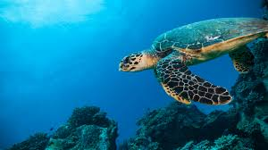

Introduction
The ocean drives global systems that make the Earth habitable for humankind. Our rainwater, drinking water, weather, climate, coastlines, much of our food, and even the oxygen in the air we breathe, are all ultimately provided and regulated by the sea.
Key Facts
Oceans cover three quarters of the Earth's surface, contain 97% of the Earth's water, and represent 99% of the living space on the planet by volume.
Over three billion people depend on marine and coastal biodiversity for their livelihoods.
Globally, the market value of marine and coastal resources and industries is estimated at $3 trillion per year or about 5% of global GDP.
Challenges
- Ocean acidification
- Marine pollution
- Overfishing
- Loss of marine habitats
- Climate change impacts
Targets
- Reduce marine pollution
- Protect and restore ecosystems
- Reduce ocean acidification
- Sustainable fishing
- Conserve coastal and marine areas
- End subsidies contributing to overfishing
- Increase economic benefits from sustainable use of marine resources
- Increase scientific knowledge, research, and technology for ocean health
- Support small scale fishers
- Implement and enforce international sea law
What Can We Do?
- Reduce plastic usage and properly dispose of plastic waste
- Choose sustainable seafood
- Participate in beach clean-ups
- Support organizations working on ocean conservation
- Educate yourself and others about marine ecosystems
Success Stories
Many countries and organizations are making progress towards achieving SDG 14. For example:
- Palau created one of the world's largest marine protected areas
- Indonesia has committed to reducing marine plastic debris by 70% by 2025
- The Great Barrier Reef Foundation is working on innovative projects to protect coral reefs
TEAM: